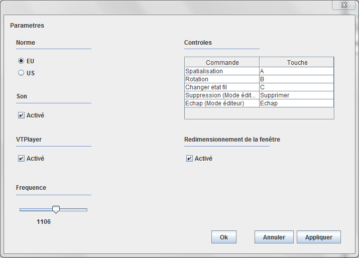
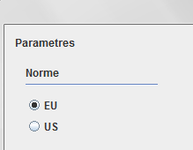
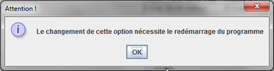
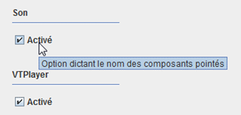
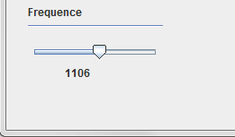
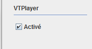
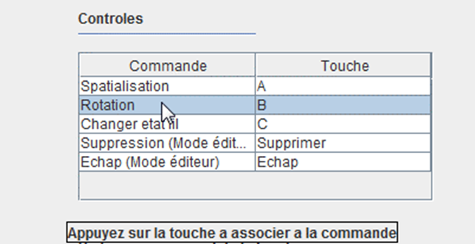
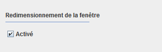

Édition
L'onglet Édition gère les options et les préférences de l'utilisateur, ainsi que la spatialisation.
Spatialisation :
Indique, par le biais de la synthèse vocale, l'emplacement du curseur dans la grille
Cette fonction est également accessible à partir de la touche C du clavier
VTPlayer préférence :
Ouvre une interface qui permet de définir les picots à lever selon
les symboles rencontrés

Dans la figure ci-dessus, l'élément logique sélectionné est le fil horizontal
de bit 1, la totalité des picots de la matrice droite sont levés.
Pour sélectionner un autre élément, il faut sélectionner l'identifiant de
l'élément dont on veut modifier la représentation dans la case située en
haut à gauche de la fenêtre.
Pour enregistrer la modification, cliquez sur le bouton Sauvegarder en bas
de la fenêtre.
Paramètres :

Ouvre l'interface permettant de gérer les principales options de l'application.
Norme : Sélection de la norme américaine ou européenne pour la
symbolisation des éléments du circuit
Sélectionnez l'un des deux boutons, en haut à gauche de la fenêtre, selon la norme que vous envisagez utiliser.
Vous ne pouvez cocher qu'une seule norme à la fois. Dans le cas où vous voudriez
comparer les deux normes, veuillez vous référer à la nomenclature disponible deux
chapitres plus haut.

Une fois la norme choisie, un redémarrage du programme est requis pour réinitialiser
l'option.

Son : Active ou non la synthèse vocale
Pour activer la synthèse vocale, et donc la lecture des éléments du circuits survolés,
cochez la case avec un simple clic.
Décochez là pour désactiver l'option.

Fréquence : Fréquence des battements des picots de la souris, entre 100 et 2000 ms
Déplacez le curseur de la barre, se trouvant en bas à droite de la fenêtre, vers la gauche pour réduire la fréquence
et vers la droite pour l'augmenter.

VTPlayer : Chargement de la souris
Cochez la case se situant sous la rubrique Son, si vous comptez utiliser la souris
VTPlayer.
Une erreur d'exécution s'affichera si le programme est lancé et que la souris n'est
pas branchée.

Commandes : Configuration des boutons du clavier pour la navigation dans le circuit

Pour choisir un nouveau raccourci clavier, cliquez sur le nom de la commande, présente
dans le tableau en haut à droite de l'interface, puis cliquez sur la touche à associer avec l'action.
Redimensionnement : Gère si la taille du schéma peut-être agrandie
Si la case est cochée, en bas à droite de la fenêtre, la fenêtre est redimensionnée et non le
schéma, si elle ne l'est pas, des barres de défilement apparaissent sur le coté droit de la fenêtre.

Cette option nécessite également un redémarrage.
Créé avec HelpNDoc Personal Edition: Outil de création d'aide complet